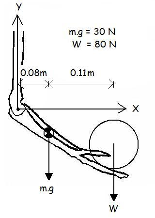
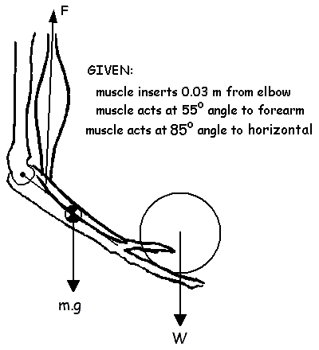

Bone-on-Bone Forces vs Joint Reaction Forces
In previous lectures, we used Newton's second law and free body diagrams to find the net joint moments and joint reaction forces. Click dynamic equilibrium and linked segment mechanics if you wish to review. The net joint moments were very helpful for the interpretation of the causes of human motion but the net joint moments were not very good estimates of the actual stresses within human articulations. The reason for this is that the muscles were simplified to a single net joint moment actuator. The example below shows this difference using the elbow joint in static equilibrium.

Example:
The diagram to the right shows a person holding an 80 N weight in his hand. We would like to know the net joint moment and joint reaction forces required to maintain this position in static equilibrium.
In order to determine the internal kinetics, our first step is to draw a free body diagram of the forearm and hand segment. The rigid body is acted upon by the gravitational forces of the segment's mass (30N), the applied load (80N) the net joint moment representing all the tissues crossing the joint (M) and the joint reactions forces in the X and Y directions.

The second step is to use the three equations of static equilibrium to solve for the joint reaction forces and net joint moment.
We can see in the solution to the left that the net joint moment is 17.6 N.m and that the horizontal reaction force is 0 N and the vertical reaction force is 110N.
This result assumed that the muscles crossing the elbow joint could be represented by the pure torque generator (M).

We know that muscles are not pure torque generators. We know that a muscle is better represented by a linear force actuator pulling from origin to insertion (or vice versa depending on the segment of interest). Let's re-examine this situation given a single muscle that exerts a force (F) acting on the segment with the coordinates shown to the right.

The free body diagram is similar. The only difference is that the net joint moment (M) has been replaced with the actual muscle force (F) and the same equations of static equilibrium are used.

However, the joint reaction forces are quite different. The muscle force required to keep the forearm in static equilibrium was 716 N. This is considerably larger than the 110N gravitational force. This is to be expected because the moment arm of the muscle is much shorter than moment arms of the load and segment mass. The consequence of this large muscle force is that it compresses the forearm into the humerus and tends to shear it anteriorly as well.
These bone-on-bone forces of 603 N in the vertical and 62.4 N in the horizontal are closer to the real situation than the joint reaction forces calculated above. The reason that we do not normally do these calculations is that in reality, we do not have accurate insertion distances of muscles and exact angles of the muscle force direction. An even greater problem is that there are several muscles crossing the joint and our equations of equilibrium only allow the calculation of one unknown.
A more accurate model would include all of the muscles crossing the elbow joint such as the biceps (F1), Brachialis (F2), and the Brachioradialis (F3) shown in the diagram below. In this situation, we would have five unknowns (F1, F2, F3, Rx, and Ry) and only three equations. This is known as the "Indeterminacy Problem" and is the main reason that most linked segment mechanics uses the net joint moment rather than individual muscle forces. The next lecture looks at possible solutions to the indeterminacy problem.